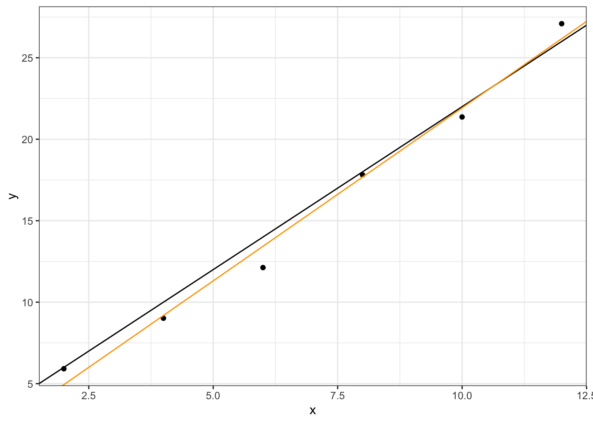
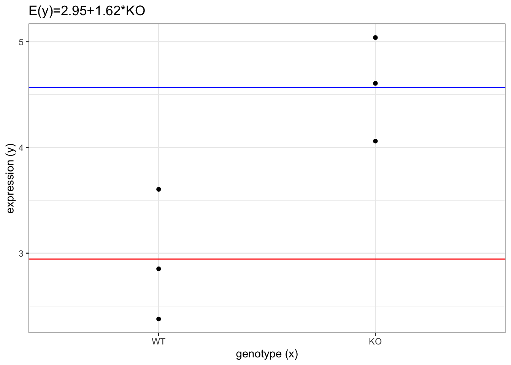

library(tidyverse)
library(magrittr)
library(broom)
library(marginaleffects)
library(limma)
theme_set(theme_bw())
set.seed(1981)Regression models for statistical analysis of gene expression data
References
A guide to creating design matrices for gene expression experiments
RNA-seq analysis is easy as 1-2-3 with limma, Glimma and edgeR
Setup
Common statistical tests are regression models
Regression models
Regression models propose that \(y_i\) is a function of \(x_i\) and \(\beta\) with \(e_i\) representing an additive error term that may stand in for un-modeled determinants of \(y_i\) or random noise. The researcher’s goal is to estimate the function \(f(x_i, \beta)\) that most closely fits the data generation process based on the data/observations:
\[ \begin{gather} (y_i,x_i) \\ i = 1, \ldots, n \end{gather} \] Model:
\[ y_i = f(x_i, \beta) + e_i \]
For example (univariate linear regression):
\[ f(x_i, \beta) = \beta_0 + \beta_1 x_i \]
\[ y_i = \beta_0 + \beta_1 x_i + e_i \] \[ e_i \sim \mathcal{N}(\mu = 0, \sigma^2) \]
\[ y_i \sim \beta_0 + \beta_1 x_i + \mathcal{N}(\mu = 0, \sigma^2) \]
\[ y_i \sim \mathcal{N}(\mu_i, \sigma^2) \]
\[ \mu_i = \beta_0 + \beta_1 x_i = E(Y) \]
Deterministic vs stochastic/statistical linear regression model
\[ y = a + b x \]
a = 2
b = 2
x = seq(2, 12, by = 2)
y = a + b * x
data = tibble(x, y)
dataggplot(data, aes(x = x, y = y)) +
geom_point() +
geom_abline(intercept = a, slope = b)y = a + b * x + rnorm(n = length(x), sd = 1)
data = tibble(x, y)
dataggplot(data, aes(x = x, y = y)) +
geom_point() +
geom_abline(intercept = a, slope = b)\[ y_i \sim \mathcal{N}(\mu_i, \sigma^2) \]
\[ \begin{align} \mu_i & = \beta_0 + \beta_1 x_i \\ & = \beta_0 \cdot 1 + \beta_1 \cdot x_i \\ \end{align} \]
R formula syntax:
\[ y \sim 1 + x \]
(design = model.matrix(y ~ 1 + x)) (Intercept) x
1 1 2
2 1 4
3 1 6
4 1 8
5 1 10
6 1 12
attr(,"assign")
[1] 0 1fit = lm(y ~ 1 + x)
tidy(fit)\[ \hat{y}_i = \hat{\beta_0} + \hat{\beta_1} x_i \]
\[ e_i = y_i - \hat{y}_i \]
y = a + b * x + rnorm(n = length(x), sd = 1)
data = tibble(x, y)
ggplot(data, aes(x = x, y = y)) +
geom_point() +
geom_abline(intercept = a, slope = b) +
# geom_abline(intercept = fit$coefficients[1], slope = fit$coefficients[2], color = "red") +
geom_smooth(method = "lm", color = "orange")
Regression model for covariates
\[ \text{expression} = \beta_0 + \beta_1 \text{age} \]
mouse = paste0("MOUSE", 1:6)
age = c(1,2,3,4,5,6)
expression = 2 + 0.5 * age + rnorm(n = 6, sd = 0.1)
data = tibble(mouse, expression, age)
data(design = model.matrix(expression ~ 1 + age)) (Intercept) age
1 1 1
2 1 2
3 1 3
4 1 4
5 1 5
6 1 6
attr(,"assign")
[1] 0 1fit = lm(expression ~ 1 + age)
tidy(fit)model.name = paste0("E(y)=", round(fit$coef[1],2), "+", round(fit$coef[2],2), "*x")
ggplot(data, aes(y = expression, x = age)) +
geom_point() +
geom_abline(intercept = fit$coef[1],
slope = fit$coef[2],
color = "red") +
labs(title = model.name,
y = "expression (y)",
x = "age (x)")Means model for factors
group = fct_relevel(rep(c("WT", "KO"), each = 3), "WT")
data = tibble(mouse, expression, group)
data(design = model.matrix(expression ~ 1 + group)) (Intercept) groupKO
1 1 0
2 1 0
3 1 0
4 1 1
5 1 1
6 1 1
attr(,"assign")
[1] 0 1
attr(,"contrasts")
attr(,"contrasts")$group
[1] "contr.treatment"fit = lm(expression ~ 1 + group)
tidy(fit)model.name = paste0("E(y)=", round(fit$coef[1],2), "+", round(fit$coef[2],2), "*KO")
ggplot(data, aes(y = expression, x = group)) +
geom_point() +
geom_hline(yintercept = fit$coef[1],
color = "red") +
geom_hline(yintercept = fit$coef[1] + fit$coef[2],
color = "blue") +
labs(title = model.name,
y = "expression (y)",
x = "group (x)")
Mean-reference model for factors
(design = model.matrix(expression ~ 0 + group)) groupWT groupKO
1 1 0
2 1 0
3 1 0
4 0 1
5 0 1
6 0 1
attr(,"assign")
[1] 1 1
attr(,"contrasts")
attr(,"contrasts")$group
[1] "contr.treatment"fit = lm(expression ~ 0 + group)
tidy(fit)model.name = paste0("E(y)=", round(fit$coef[1],2), "*WT", "+", round(fit$coef[2],2), "*KO")
ggplot(data, aes(y = expression, x = group)) +
geom_point() +
geom_hline(yintercept = fit$coef[1],
color = "red") +
geom_hline(yintercept = fit$coef[2],
color = "blue") +
labs(title = model.name,
y = "expression (y)",
x = "group (x)")
makeContrasts(groupKO - groupWT, levels=colnames(design)) Contrasts
Levels groupKO - groupWT
groupWT -1
groupKO 1Design and contrast matrices
XXX
Studies of treatments and control
All pairwise comparisons
treatment = as_factor(rep(c("CTRL", "A", "B", "C"), each=3))
n = length(treatment)
expression = rep(c(0,1,2,4), each=3) + 1
expression = expression + rnorm(n, sd=0.1)
mouse = paste0("MOUSE", 1:n)
data = tibble(expression, mouse, treatment)
data(design = model.matrix(expression ~ 1 + treatment)) (Intercept) treatmentA treatmentB treatmentC
1 1 0 0 0
2 1 0 0 0
3 1 0 0 0
4 1 1 0 0
5 1 1 0 0
6 1 1 0 0
7 1 0 1 0
8 1 0 1 0
9 1 0 1 0
10 1 0 0 1
11 1 0 0 1
12 1 0 0 1
attr(,"assign")
[1] 0 1 1 1
attr(,"contrasts")
attr(,"contrasts")$treatment
[1] "contr.treatment"fit = lm(expression ~ 1 + treatment)
tidy(fit)avg_comparisons(fit, df = insight::get_df(fit))model.name = paste0("E(y)=", round(fit$coef[1],2), "+", round(fit$coef[2],2), "*A", "+", round(fit$coef[3],2), "*B", "+", round(fit$coef[4],2), "*C")
ggplot(data, aes(y = expression, x = treatment)) +
geom_point() +
geom_hline(yintercept = fit$coef[1],
color = "red") +
geom_hline(yintercept = fit$coef[1] + fit$coef[2],
color = "blue") +
geom_hline(yintercept = fit$coef[1] + fit$coef[3],
color = "green") +
geom_hline(yintercept = fit$coef[1] + fit$coef[4],
color = "orange") +
labs(title = model.name,
y = "expression (y)",
x = "treatment (x)")(design = model.matrix(expression ~ 0 + treatment)) treatmentCTRL treatmentA treatmentB treatmentC
1 1 0 0 0
2 1 0 0 0
3 1 0 0 0
4 0 1 0 0
5 0 1 0 0
6 0 1 0 0
7 0 0 1 0
8 0 0 1 0
9 0 0 1 0
10 0 0 0 1
11 0 0 0 1
12 0 0 0 1
attr(,"assign")
[1] 1 1 1 1
attr(,"contrasts")
attr(,"contrasts")$treatment
[1] "contr.treatment"fit = lm(expression ~ 0 + treatment)
tidy(fit)avg_comparisons(fit, df = insight::get_df(fit))model.name = paste0("E(y)=", round(fit$coef[1],2), "*CTRL", "+", round(fit$coef[2],2), "*A", "+", round(fit$coef[3],2), "*B", "+", round(fit$coef[4],2), "*C")
ggplot(data, aes(y = expression, x = treatment)) +
geom_point() +
geom_hline(yintercept = fit$coef[1],
color = "red") +
geom_hline(yintercept = fit$coef[2],
color = "blue") +
geom_hline(yintercept = fit$coef[3],
color = "green") +
geom_hline(yintercept = fit$coef[4],
color = "orange") +
labs(title = model.name,
y = "expression (y)",
x = "treatment (x)")contrasts = makeContrasts(
treatmentA-treatmentCTRL,
treatmentB-treatmentCTRL,
treatmentC-treatmentCTRL,
levels=colnames(design))
colnames(contrasts) <- abbreviate(colnames(contrasts))
contrasts Contrasts
Levels tA-t tB-t tC-t
treatmentCTRL -1 -1 -1
treatmentA 1 0 0
treatmentB 0 1 0
treatmentC 0 0 1Control vs the rest
makeContrasts((treatmentA + treatmentB + treatmentC)/3 - treatmentCTRL, levels=colnames(design)) Contrasts
Levels (treatmentA + treatmentB + treatmentC)/3 - treatmentCTRL
treatmentCTRL -1.0000
treatmentA 0.3333
treatmentB 0.3333
treatmentC 0.33332 vs 2 group comparisons
makeContrasts((treatmentCTRL + treatmentC)/2 - (treatmentA + treatmentB)/2, levels=colnames(design)) Contrasts
Levels (treatmentCTRL + treatmentC)/2 - (treatmentA + treatmentB)/2
treatmentCTRL 0.5
treatmentA -0.5
treatmentB -0.5
treatmentC 0.5Studies of interactions and additivity of treatments
Interactions using a single factor model
Interactions using a two-factor model
treat1 <- as_factor(c(0,0,0,1,1,1,0,0,0,1,1,1))
treat2 <- as_factor(c(0,0,0,0,0,0,1,1,1,1,1,1))
levels(treat1) = levels(treat2) = c("NO", "YES")
data = tibble(mouse, expression, treat1, treat2)
data(design = model.matrix(expression ~ treat1 * treat2)) (Intercept) treat1YES treat2YES treat1YES:treat2YES
1 1 0 0 0
2 1 0 0 0
3 1 0 0 0
4 1 1 0 0
5 1 1 0 0
6 1 1 0 0
7 1 0 1 0
8 1 0 1 0
9 1 0 1 0
10 1 1 1 1
11 1 1 1 1
12 1 1 1 1
attr(,"assign")
[1] 0 1 2 3
attr(,"contrasts")
attr(,"contrasts")$treat1
[1] "contr.treatment"
attr(,"contrasts")$treat2
[1] "contr.treatment"fit = lm(expression ~ treat1 * treat2)
tidy(fit)avg_comparisons(fit, df = insight::get_df(fit))Additivity using a two-factor model
XXX
Studies with multiple factors
tissue = treat1
levels(tissue) = c("LUNG", "BRAIN")
cells = treat2
levels(cells) = c("B", "T")
grp = paste(tissue, cells, sep=":")
grp = as_factor(grp)
data = tibble(mouse, expression, tissue, cells, grp)
data(design = model.matrix(expression ~ 0 + grp)) grpLUNG:B grpBRAIN:B grpLUNG:T grpBRAIN:T
1 1 0 0 0
2 1 0 0 0
3 1 0 0 0
4 0 1 0 0
5 0 1 0 0
6 0 1 0 0
7 0 0 1 0
8 0 0 1 0
9 0 0 1 0
10 0 0 0 1
11 0 0 0 1
12 0 0 0 1
attr(,"assign")
[1] 1 1 1 1
attr(,"contrasts")
attr(,"contrasts")$grp
[1] "contr.treatment"fit = lm(expression ~ 0 + grp)
tidy(fit)avg_comparisons(fit, df = insight::get_df(fit))Studies with multiple covariates (and factors)
XXX
sessionInfo()R version 4.2.2 (2022-10-31)
Platform: x86_64-apple-darwin17.0 (64-bit)
Running under: macOS Big Sur ... 10.16
Matrix products: default
BLAS: /Library/Frameworks/R.framework/Versions/4.2/Resources/lib/libRblas.0.dylib
LAPACK: /Library/Frameworks/R.framework/Versions/4.2/Resources/lib/libRlapack.dylib
locale:
[1] en_US.UTF-8/en_US.UTF-8/en_US.UTF-8/C/en_US.UTF-8/en_US.UTF-8
attached base packages:
[1] stats graphics grDevices utils datasets methods base
other attached packages:
[1] limma_3.54.2 marginaleffects_0.11.0 broom_1.0.4
[4] magrittr_2.0.3 lubridate_1.9.2 forcats_1.0.0
[7] stringr_1.5.0 dplyr_1.1.0 purrr_1.0.1
[10] readr_2.1.4 tidyr_1.3.0 tibble_3.2.0
[13] ggplot2_3.4.1 tidyverse_2.0.0
loaded via a namespace (and not attached):
[1] tidyselect_1.2.0 xfun_0.37 splines_4.2.2 lattice_0.20-45
[5] colorspace_2.1-0 vctrs_0.5.2 generics_0.1.3 htmltools_0.5.4
[9] yaml_2.3.7 mgcv_1.8-42 utf8_1.2.3 rlang_1.0.6
[13] pillar_1.8.1 glue_1.6.2 withr_2.5.0 lifecycle_1.0.3
[17] munsell_0.5.0 gtable_0.3.1 htmlwidgets_1.6.1 evaluate_0.20
[21] labeling_0.4.2 knitr_1.42 tzdb_0.3.0 fastmap_1.1.1
[25] fansi_1.0.4 Rcpp_1.0.10 checkmate_2.1.0 scales_1.2.1
[29] backports_1.4.1 jsonlite_1.8.4 farver_2.1.1 hms_1.1.2
[33] digest_0.6.31 stringi_1.7.12 insight_0.19.0 grid_4.2.2
[37] cli_3.6.0 tools_4.2.2 pkgconfig_2.0.3 ellipsis_0.3.2
[41] Matrix_1.5-3 data.table_1.14.8 timechange_0.2.0 rmarkdown_2.20
[45] rstudioapi_0.14 R6_2.5.1 nlme_3.1-162 compiler_4.2.2